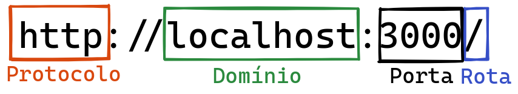

3.3 - Nossa primeira API: Hello, World!
Chegou o grande momento! Vamos criar nossa primeira rota no arquivo app.js, que fica no diretório src/:
// src/app.js
// const express = require('express');
// const app = express();
app.get('/', (req, res) => res.status(200).json({ message: 'Hello, World!' }));
// module.exports = app;
Não se esqueça de executar o comando npm run dev para iniciar o servidor da sua aplicação.
Agora, abra o navegador e acesse o link http://localhost:3001/ e verá que já alcançamos mais um marco: "Utilizar o Node.js com o framework Express para criar uma rota de um endpoint de API, acessível pelo browser".
Entendendo nosso código
Analisando novamente a última linha que adicionamos ao código:
app.get('/', (req, res) => res.status(200).json({ message: 'Hello, World!' }));
Dentro da constante app, temos diversos recursos disponíveis, sendo um deles a função get, que usamos toda vez que queremos pedir algum dado.
Observe que a função get recebe dois parâmetros:
- 1° parâmetro
'/': Este é o caminho da URL que desejamos configurar. Pode ser/login,/produtos,/pessoas, ou qualquer outro. Neste exemplo, estamos usando apenas/, que é a rota raiz.
- 2° parâmetro
(req, res) => {}: Esta função é chamada quando a rota é acessada. Ela pode receber de 2 a 4 parâmetros, sendo os mais comuns:
-
req(Request): Representa a requisição feita pelo cliente, permitindo o acesso aos dados enviados, como query, params e body (veremos mais sobre isso); -
res(Response): Representa a resposta que enviaremos dada uma solicitação;
-
Agora, observe o trecho res.status(200).json({ message: 'Hello, World!' }) e vamos analisar cada parte:
-
rescomo comentado, responde as requisições. Existem diferentes formas de responder a requisições, tais como:- Formato text/JSON, como o caso do
res.json({ message: 'Hello, World!' }); - Formato text/HTML, como o caso do
res.send('<h1>Hello, World!</h1>'); - Redirecionamentos, como o caso do
res.redirect('https://www.betrybe.com/'); - Páginas completas ou partes dela, como o caso do
res.render('index.html'); - Finalizando, como o caso do
res.end();
- Formato text/JSON, como o caso do
⚠️ Atenção: Por enquanto, vamos nos concentrar apenas no formato JSON.
Status Code
Normalmente, enviamos um status code junto com a resposta, como em res.status(200).... Esses status code são essenciais para identificar o que está acontecendo com as requisições. Não se preocupe em decorá-los agora; com o tempo, você se acostumará a usá-los. E se surgir alguma dúvida, a documentação do MDN é um ótimo recurso para consulta.
Os status code mais conhecidos são:
-
200: Significa 'OK' (Tudo certo); -
500: Indica um erro no Servidor; -
404: Este muitas pessoas já viram, indica que a página não foi encontrada;
De olho na dica👀: Para facilitar a leitura do código, associe os status code a constantes nomeadas!
const OK = 200,const INTERNAL_SERVER_ERROR = 500econst NOT_FOUND = 404.
URLs
Vamos entender neste momento a anatomia da URL da resultante da nossa API:

Informações adicionais do framework Express
Como estamos executando a aplicação localmente, usamos o domínio localhost. Note que na figura, a porta é especificada, como em http://localhost:3000/, mas em nossa aplicação estamos utilizando a porta 3001!
Quando estamos trabalhando localmente, temos a flexibilidade de escolher as portas e rodar várias aplicações em paralelo. Já no site da Trybe, por exemplo, a porta não é mencionada, pois geralmente é a porta padrão (servidores HTTP geralmente respondem na porta 80).
Agora, vamos assistir a um vídeo que traz mais exemplos e contexto sobre o que abordamos até agora nesta seção!
OBS da IA
Para o SAP CAP
- O "Hello World" no CAP é uma function declarada em CDS e implementada em JS. O endpoint fica em
GET /odata/v4/hello/hello(to='Mundo').
// srv/hello-service.cds
service HelloService {
function hello(to : String) returns String;
}// srv/hello-service.js
const cds = require('@sap/cds');
module.exports = class HelloService extends cds.ApplicationService {
init() {
this.on('hello', (req) => `Hello, ${req.data.to}!`);
return super.init();
}
};Minhas anotações
Atalhos: ← → navegar · Ctrl K ou / buscar